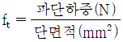
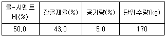
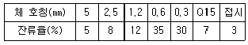
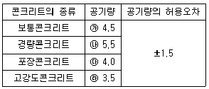
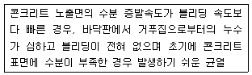
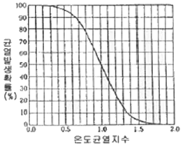
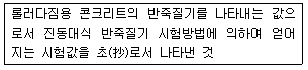
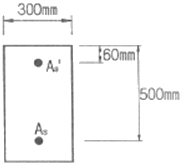
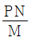

콘크리트기사 (2017-08-26 기출문제)
1과목: 재료 및 배합
1. 고로슬래그 미분말을 사용한 콘크리트에 대한 설명이다. 옳지 않은 것은?
- 고로슬래그 미분말을 사용한 콘크리트는 중성화 속도를 저하시키는 효과가 있다
- 고로슬래그 미분말을 사용한 콘크리트는 철근 보호성능이 향상된다.
- 고로슬래그 미분말을 사용한 콘크리트는 수밀성이 향상된다.
- 고로슬래그 미분말을 사용한 콘크리트의 초기강도는 포틀랜드시멘트 콘크리트보다 작다.
(정답률: 59%)

2. 콘크리트용 강섬유의 인장강도 시험(KS F 2565)에 대한 설명으로 틀린 것은?
- 시료의 장착은 눈금 거리를 10mm로 하고, 시험 중 빠지지 않도록 고정하여야 한다.
- 평균 제한 속도는 5MPa/s~10a/s의 속도로 한다.
- 시료의 수는 10개 이상으로 한다.
- 강섬유의 인장강도(ft)를 구하는 식은

이다.
(정답률: 66%)
3. 잔골재량이 770kg/m3, 굵은골재량이 950kg/m3이 시방배합을, 잔골재 중의 5mm체 잔류율이 4%, 굵은골재 중의 5mm체 통과율이 3%인 현장골재를 사용하는 현장배합으로 수정할 경우 입도보정에 의한 잔골재량은 약 얼마인가?
- 800.8kg/m3
- 791.4kg/m3
- 783.2kg/m3
- 772.5kg/m3
(정답률: 55%)
4. 포틀랜드 시멘트를 화학 분석한 결과 Na2O가 0.3%이고 K2O가 1.2%이었다. 이 시멘트의 총알칼리량은? (단, Na, K 및 O의 원자량은 각각 23.0, 39.1 및 16.0이다.)
- 1.09%
- 0.92%
- 0.82%
- 1.29%
(정답률: 63%)
5. 시멘트의 비중시험을 통해 알 수 있는 것은?
- 풍화의 정도
- 화학저항성
- 동결융해저항성
- 주요 성분의 구성
(정답률: 76%)
6. 콘크리트용 잔골재에는 점토를 비롯한 유해물질이 함유될 수 있다. 유해물질로 인한 콘크리트 품질의 저하를 방지하기 위하여 잔골재의 유해물 함유량을 규제하는데 다음 중 항목별 유해물 허용 한도(질량백분율)가 틀린 것은?
- 점토 덩어리 - 2.0%
- 0.08mm체 통과량(콘크리트 표면이 마모작용을 받는 경우) - 3.0%
- 석탄, 갈탄 등으로 밀도 2.0g/cm3의 액체에 뜨는 것(콘크리트의 외관이 중요한 경우) - 0.5%
- 염화물(NaCl환산량) - 0.04%
(정답률: 53%)
7. 다음 시멘트 중 수경률이 가장 큰 시멘트는?
- 보통 포틀랜드 시멘트
- 조강 포틀랜드 시멘트
- 백색 포틀랜드 시멘트
- 중용열 포틀랜드 시멘트
(정답률: 71%)
8. 콘크리트에 사용되는 골재의 실적률에 대한 설명으로 옳지 않은 것은?
- 골재는 입형과 입도가 좋을수록 실적률이 큰 값을 갖는다.
- 실적률이 큰 골재는 시멘트, 페이스트의 양이 적어 경제적인 콘크리트 제조가 가능하다.
- 실적률이 큰 골재는 콘크리트의 마모저항 및 내구성, 투수성, 흡수성의 증대를 기대할 수 있다.
- 실적률이 큰 골재는 공극률이 작다.
(정답률: 48%)
9. 기존 콘크리트 구조물의 철거로 인해 발생되는 폐콘크리트 등과 같이 이미 경화된 콘크리트를 파쇄하여 가공한 골재를 무엇이라고 하는가?
- 순환골재
- 부순골재
- 페로니켈슬래그 골재
- 용융슬래그 골재
(정답률: 80%)
10. 아래 표의 조건에 의해서 콘크리트 시방배합을 실시할 경우 그 결과로서 틀린 것은? (단, 시멘트 밀도는 3.15g/cm3, 잔골재 및 굵은골재의 표건밀도는 각각 2.57g/cm3 및 2.67g/cm3, 골재는 표면건조포화상태 이다.)

- 단위 시멘트량은 340kg이다.
- 단위 잔골재량은 약 798kg이다.
- 단위 굵은골재량은 약 1023kg이다.
- 골재의 절대용적은 약 672ℓ이다.
(정답률: 55%)
11. 다음 중 콘크리트의 배합설계에서 잔골재율보정에 대한 설명으로 옳은 것은?
- 잔골재의 조립률이 0.1만큼 작을 때마다 잔골재율은 0.5만큼 크게한다
- 공기량이 1%만큼 클 때마다 잔골재율은 0.5~1.0만큼 크게한다.
- 물-결합재비가 0.⑤만큼 작을 때마다 잔골재율은 1만큼 작게한다.
- 자갈을 사용할 경우 잔골재율은 2~3만큼 크게한다.
(정답률: 32%)
12. 다음 중 콘크리트용 모래에 포함되어 있는 유기불순물 시험에서 사용하지 않는 약품은?
- 수산화나트륨
- 탄닌산
- 페놀프탈레인
- 메틸알코올
(정답률: 78%)
13. 콘크리트용 혼화재료로서 플라이 애시의 품질을 시험하기 위한 시료의 채취 및 조제에 대한 내용으로 틀린 것은?
- 시료의 수량 및 채취방법은 인도ㆍ인수 당사자 사이의 협정에 따른다.
- 시험용 시료는 시험하기 전에 시험실 안에 넣어 실온과 같아지도록 한다.
- 채취한 시료는 850μm표준망체로 이물질을 제거한다.
- 조제된 시료는 시험 시까지 시험실과 비슷한 습도가 되도록 시험실의 대기 중에서 보관한다.
(정답률: 70%)
14. 시멘트의 비중 시험(KS L 5110)에 관한 설명으로 틀린 것은?
- 르샤틀리에 플라스크를 사용한다.
- 온도 20±3℃에서 비중 약 1.5이상인 완전히 탈수된 등유나 나프타를 사용한다.
- 포틀랜드 시멘트를 시료로 할 경우 1회 시험에 약 64g정도를 사용한다.
- 동일 시험자가 동일 재료에 대하여 2회 측정한 결과가 ±0.03이내이어야 한다.
(정답률: 67%)
15. 잔골재를 체가름하였더니 각 체에 남은 잔류율(질량백분율)은 아래의 표와 같았다. 이 잔골재의 조립율은?

- 2.84
- 2.87
- 2.90
- 2.93
(정답률: 60%)
16. 시멘트에 관한 다음의 설명 중 옳은 것은?
- 시멘트의 풍화는 대기 중의 탄산가스와의 직접적인 반응에 의해 일어난다.
- 비표면적이 큰 시멘트 일수록 수화반응이 늦어진다.
- C3A 성분이 많은 포틀랜드시멘트일수록 화학적저항성이 크다.
- 조강성(早强性) 포틀랜드시멘트는 일반적으로 C3S의 양이 많고 C2S의 양이 적다.
(정답률: 64%)
17. 포틀랜드 시멘트의 주원료로서 양이 많은 것부터 차례로 나열된 것은?
- 석회석＞점토＞규석
- 석회석＞석고＞점토
- 석고＞점토＞석회석
- 규석＞석회석＞점토
(정답률: 72%)
18. 15회의 압축강도 시험 실적으로부터 구한 압축강도의 표준편차가 5MPa이고 설계기준 압축강도(fck)가 40MPa 인 경우 배합강도(fcr)를 구하면?
- 46.7MPa
- 47.8MPa
- 49.6MPa
- 50MPa
(정답률: 55%)
19. 콘크리트의 배합에서 물-결합재비에 대한 일반적인 설명으로 틀린 것은?
- 물-결합재비는 소요의 강도, 내구성, 수밀성 및 균열저항성 등을 고려하여 정하여야 한다.
- 제빙화학제가 사용되는 콘크리트의 물-결합재비는 45%이하로 한다.
- 콘크리트의 수밀성을 기준으로 물-결합재비를 정할 경우 그 값은 50%이하로 한다.
- 콘크리트의 탄산화 저항성을 고려하여 물-결합재비를 정할 경우 45%이하로 한다.
(정답률: 72%)
20. 일반 콘크리트의 배합에서 굵은 골재의 최대치수에 대한 설명으로 틀린 것은?
- 단면이 큰 구조물인 경우 굵은 골재의 최대치수는 40mm를 표준으로 한다.
- 거푸집 양 측면 사이의 최소 거리를 1/5을 초과하지 않아야 한다.
- 슬래브 두께의 3/4을 초과하지 않아야 한다.
- 무근 콘크리트의 경우 부재 최소 치수의 1/4을 초과하지 않아야 한다.
(정답률: 63%)
2과목: 제조, 시험 및 품질관리
21. 구속되어 있는 무근 콘크리트 부재의 건조수축률이 100×10-6일 때 콘크리트에 작용하는 응력의 종류와 크기는? (단, 콘크리트의 탄성계수는 30GPa이다.)
- 인장응력 3.0MPa
- 압축응력 3.0MPa
- 인장응력 30MPa
- 압축응력 30MPa
(정답률: 59%)
22. 콘크리트의 블리딩에 관한 설명으로 틀린 것은?
- 일종의 재료분리 현상이다.
- 잔골재의 조립률이 클수록 블리딩이 작아진다.
- 단위수량이 큰 배합일수록 블리딩이 많아진다.
- AE제를 사용하면 단위수량을 감소시켜서 블리딩을 줄일 수 있다.
(정답률: 53%)
23. 다음 중 품질 관리 Cycle의 4단계에 속하지 않는 것은?
- Plan
- Do
- Caution
- Action
(정답률: 74%)
24. 콘크리트 재료의 저장 및 관리에 대한 설명으로 틀린 것은?
- 시멘트는 방습적인 구조로 된 사일로 또는 창고에 품종별로 구분하여 저장하여야 한다.
- 포대시멘트를 창고에 저장할 때 지면에 직접 접촉하여 쌓아야 하며, 저장기간이 길어질 우려가 있는 경우에는 13포 이상 쌓아 올리지 않아야 한다.
- 저장 중에 약간이라도 굳은 시멘트는 공사에 사용하지 않아야 한다.
- 잔골재 및 굵은 골재에 있어 종류와 입도가 다른 골재는 각각 구분하여 따로 저장한다.
(정답률: 77%)
25. 4점 재하법에 의한 콘크리트의 휨 강도 시험 (KS F 2408)에 대한 설명으로 틀린 것은?
- 지간은 공시체 높이의 3배로 한다.
- 공시체에 하중을 가할 때는 공시체에 충격을 가하지 않도록 일정한 속도로 하중을 가하여야 한다.
- 공시체가 인장족 표면 지간 방향 중심선의 4점 사이에서 파괴된 경우는 그 시험결과를 무효로 한다.
- 재하장치의 설치면과 공시체면과의 사이에 틈새가 생기는 경우는 접촉부의 공시체표면을 평평하게 갈아서 잘 접촉할 수 있도록 한다.
(정답률: 64%)
26. 굳지 않은 콘크리트의 슬럼프 시험에 관한 설명 중 틀린 것은?
- 전 작업시간을 3분 이내로 끝낸다.
- 슬럼프 콘 규격은 윗면의 안지름 100mm, 밑면의 안지름 200mm, 높이는 300mm이다.
- 철근 콘크리트에서 단면이 큰 경우 슬럼프의 표준값은 60~120mm이다.
- 슬럼프 콘의 측정 높이에서 주저않은 높이를 1mm 정밀도로 측정한다.
(정답률: 72%)
27. 레디믹스트 콘크리트의 품질 중 공기량에 대한 규정인 아래 표의 내용 중 틀린 것은?

- ㉮
- ㉯
- ㉰
- ㉱
(정답률: 68%)
28. 콘크리트의 품질관리 중 받아들이기 품질검사에 대한 설명으로 틀린 것은?
- 콘크리트의 받아들이기 품질검사는 콘크리트를 타설하기 전에 실시하여야 한다.
- 강도검사는 콘크리트의 배합검사를 실시하는 것을 표준으로 한다.
- 내구성 검사는 공기량, 염소이온량을 측정하는 것으로 한다.
- 워커빌리티의 검사는 잔골재율의 설정치를 만족하는지의 여부를 확인하고, 재료분리 저항성을 실험에 의하여 확인하여야 한다.
(정답률: 53%)
29. ø150×300mm의 원주형 콘크리트 공시체를 사용한 콘크리트의 쪼갬인장강도시험에서 최대하중이 200kN이었다면 쪼갬인장강도는?
- 1.64MPa
- 2.83MPa
- 3.21MPa
- 3.40MPa
(정답률: 71%)
30. 레디믹스트 콘크리트의 제조설비에 대한 설명으로 틀린 것은?
- 골재 저장 설비는 콘크리트 최대 출하량의 1일분 이상의 상당하는 골재량을 저장할 수 있는 크기로 한다.
- 믹서는 고정 믹서로 한다.
- 플랜트는 원칙적으로 각 재료를 위한 별도의 저장시설을 구비한다.
- 덤프 트럭은 포장 콘크리트 중 슬럼프 50mm의 콘크리트를 운반하는 경우에 한하여 사용할 수 있다.
(정답률: 68%)
31. 콘크리트의 비비기에 대한 설명으로 틀린 것은?
- 가경식 믹서를 사용하고 비비기 시간에 대한 시럼을 실시하지 않은 경우 비비기 시간은 최소 1분 30초 이상을 표준으로 한다.
- 연속믹서를 사용할 경우, 비비기 시작 후 최초에 배출되는 콘크리트는 사용하지 않아야 한다.
- 콘크리트를 너무 오래 비비면 굵은 골재가 파쇄되는 등의 이유로 오히려 콘크리트에 나쁜 영향을 주게 된다.
- 비비기는 미리 정해둔 비비기 시간 이상 계속 하지 않아야 한다.
(정답률: 59%)
32. 콘크리트의 그리프에 대한 설명으로 틀린 것은?
- 재하기간 중의 대기의 습도가 낮을수록 그리프가 크다.
- 조강 시멘트를 사용한 콘크리트는 보통 시멘트를 사용한 경우보다 크리프가 크다.
- 시멘트량이 많을수록 크리프가 크다.
- 부재치수가 작을수록 크리프가 크다.
(정답률: 63%)
33. 다음은 콘크리트 제조의 일반사항에 대한 설명이다. 옳지 않은 것은?
- 콘크리트는 소요의 강도, 내구성, 수밀성을 가져야 한다.
- 시공 시 작업에 적절한 워커빌리티를 가져야 한다.
- 콘크리트의 품질은 균일해야 한다.
- 시공일수의 단축을 위하여 응결시간이 짧을수록 용이하다.
(정답률: 72%)
34. 콘크리트 압축강도 시험에서 하중을 가하는 속도로 가장 적합한 것은?
- 압축 응력도의 증가율의 매초 0.6±0.4MPa이 되도록 한다.
- 압축 응력도의 증가율의 매초 1.2±0.4MPa이 되도록 한다.
- 압축 응력도의 증가율의 매초 4±2MPa이 되도록 한다.
- 압축 응력도의 증가율의 매초 6±4MPa이 되도록 한다.
(정답률: 75%)
35. 콘크리트의 압축강도 시험용 공시체 제작에 대한 설명으로 틀린 것은?
- 공시체는 지름의 2배의 높이를 가진 원기둥형으로 하며, 그 지름은 굵은 골재의 최대치수의 3배 이상, 100mm 이상으로 한다.
- 콘크리트를 몰드에 채울 때 2층 이상으로 거의 동일한 두께로 나눠서 채우며, 각 층의 두께는 160mm를 초과해서는 안된다.
- 다짐봉을 사용하여 콘크리트를 다져 넣을 때 각 층은 적어도 700mm2에 1회의 비율로 다지도록 하고 다짐봉이 바로 아래층에 20mm 정도 들어가도록 다진다.
- 캐핑용 재료를 사용하여 공시체의 캐핑을 할 때 캐핑층의 두께는 공시체 지름의 2%를 넘어서는 안된다.
(정답률: 67%)
36. 고유동 콘크리트의 컴시스턴시를 평가하기 위한 시험법 중 가장 적당하지 않은 것은?
- V로트시험
- 비비시험
- L플로우시험
- 슬럼프 플로우시험
(정답률: 62%)
37. 콘크리트의 받아들이기 품질검사에서 염소이론량 시험의 시험 횟수의 규정으로 옳은 것은? (단, 바다 잔골재를 사용할 경우)
- 1일 2회
- 1일 1회
- 1주 2회
- 1주 1회
(정답률: 70%)
38. 콘크리트를 거푸집에 타설한 후부터 응결이 종료할 때까지 발생하는 균열을 초기균열 이라고 한다. 아래의 표에서 설명하는 초기 균열은?

- 초기 건조균열
- 거푸집 변형에 의한 균열
- 진동 및 경미한 재하에 따른 균열
- 침하균열
(정답률: 67%)
39. 1일 콘크리트 사용량이 약 200m3인 경우 필요한 믹서의 용량은? (단, 1일 작업시간은 8시간, 1회 비벼대기 시간 2분, 작업효율 E=0.8이다.)
- 2.04m3
- 1.55m3
- 1.04m3
- 0.55m3
(정답률: 58%)
40. 콘크리트의 블리딩 및 블리딩 시험방법에 대한 설명으로 옳은 것은?
- 시험하는 동안 시료 콘크리트 및 실험실의 온도는 23±2℃로 유지해야 한다.
- 처음 60분 동안은 10분 간격으로 콘크리트 표면에 스며나온 물은 빨아낸다.
- 블리딩은 대체로 5~7시간 정도에 끝난다.
- 블리딩은 시멘트의 분말도가 낮을수록 적다.
(정답률: 50%)
3과목: 콘크리트의 시공
41. 콘크리트 공장제품에 대한 설명으로 틀린 것은?
- 일반적인 공장제품 콘크리트의 강도는 재령 14일에서의 압축강도 시험값으로 나타낸다.
- 슬럼프가 20mm이상인 콘크리트의 배합은 슬럼프 시럼을 원칙으로 한다.
- 시공시 철근 교점의 중요한 곳은 풀림 철선 혹은 적절한 클립 등을 사용하여 결속하거나 점용접하여 조립하여야 한다.
- 프리스트레스트 콘크리트 제품의 경우 순환골재를 사용하는 것을 원칙으로 한다.
(정답률: 65%)
42. 시공이음에 대한 설명으로 틀린 것은?
- 바닥틀의 시공이음은 슬래브 또는 보의 경간 중앙부 부근에 두어야 한다.
- 아치의 시공이음은 아치축에 직각방향이 되도록 설치하여야 한다.
- 시공이음은 부재의 압축력이 작용하는 방향과 직각이 되도록 하는 것이 원칙이다.
- 바닥틀과 일체로 된 기둥, 벽의 시공이음 위치는 바닥틀과의 경계 부근을 피하여 설치하여야 한다.
(정답률: 50%)
43. 이미 경화한 매시브한 콘크리트 위에 슬래브를 타설할 때 부재 평균 최고온도와 외기온도와의 온도차가 12.8℃ 발생하였다면, 아래의 표를 이용하여 온도균열 발생확률을 구하면?

- 약 5%
- 약 15%
- 약 30%
- 약 50%
(정답률: 61%)
44. 콘크리트공장제품의 특징으로 틀린 것은?
- 기후에 좌우되는 일이 적다.
- 작업원의 숙련도에 상관없이 생산된다.
- KS 규격에 따라 표준화되어 실물 실험을 할 수 있는 경우가 많다.
- 단면이 치밀하다.
(정답률: 70%)
45. 수중불분리성 콘크리트에 사용하는 굵은 골재의 최대 치수에 대한 설명으로 틀린 것은?
- 40mm 이하를 표준으로 한다.
- 부재 최소 치수의 1/5를 초과해서는 안된다.
- 철근의 최소 순간격은 2/3을 초과해서는 안된다.
- 현장 타설말뚝 및 지하연속벽에 사용하는 콘크리트의 경우는 25mm이하를 표준으로 한다.
(정답률: 43%)
46. 컴프레서 혹은 펌프를 이용하여 노즐 위치까지 호스 속으로 운반한 콘크리트를 압축공기에 의해 시공면에 뿜어서 만든 콘크리트는?
- 프리플레이스트콘크리트
- 수밀콘크리트
- 매스콘크리트
- 숏크리트
(정답률: 79%)
47. 서중콘크리트에 대한 설명으로 틀린 것은?
- 기온 10℃의 상승에 소요 단위수량은 2~5% 감소하므로 시멘트량도 비례하여 감소시켜야 한다.
- 하루 평균기온이 25℃를 초과하는 것이 예상되는 경우 서중 콘크리트로 시공하여야 한다.
- 서중 콘크리트는 배합온도를 낮게 관리 하여야 한다.
- 콘크리트는 비빈 후 즉시 타설하여야 하며, 지연형 감수제를 사용하는 등의 일반적인 대책을 강구한 경우라도 1.5시간 이내에 타설하여야 한다.
(정답률: 58%)
48. 콘크리트 펌프 운반에 대한 설명으로 틀린 것은?
- 콘크리트 펌프 운반시 슬럼프 값이 클수록, 수송관 직경이 클수록 수송관내 압력손실은 작아진다.
- 펌퍼빌리티가 좋은/굳지 않은 콘크리트란 직선관속을 활동하는 유동성, 곡관이나 테이퍼관을 통과할 때의 변형성, 관내 압력의 시간적, 위치적 변동에 대한 분리저항성의 3가지 성질을 균형있게 유지하는 것이다.
- 일반적으로 수평관 1m당 관내압력손실에 수평환산거리를 곱한 값이 콘크리트 펌프의 최대 이론 토출압력의 80% 이하가 되도록 한다.
- 펌퍼빌리티는 슬럼프와 공기량 시험에 의하여 판정할 수 있다.
(정답률: 42%)
49. 매스콘크리트에 대한 설명으로 틀린 것은?
- 넓이가 넓은 평판구조는 두께 0.8m 이상일 경우 매스콘크리트로 다루어야 한다.
- 하단이 구속된 벽조는 두께 0.5m 이상일 경우 매스콘크리트로 다루어야 한다.
- 벽체구조물의 수축이음은 균열발생을 확실히 유도하기 위해서 수축이음의 단면감소율을 15% 이상으로 하여야 한다.
- 굵은 골재의 최대치수는 작업성이나 건조수축 등을 고려하여 되도록 큰 값을 사용하여야 한다.
(정답률: 53%)
50. 프리플레이스트 콘크리트용 잔골재의 입도는 주입모르타르의 유동성과 보수성을 좋게 하기 위하여 콘크리트표준시방서에서 표준입도 범위 조립률의 범위를 규정하고 있다. 이 때 조립률의 범위로서 옳은 것은?
- 0.6~1.3
- 1.4~2.2
- 2.3~3.1
- 6~7
(정답률: 54%)
51. 유동화콘크리트 제조에 관한 설명으로 틀린 것은?
- 배치플랜트에서 운반한 콘크리트에 공사현장에서 트럭 교반기에 유동화제를 첨가하여 균일하게 될 때까지 교반하여 유동화시킨다.
- 배치플랜트에서 트럭 교반기 내의 콘크리트에 유동화제를 첨가하여 즉시 고속으로 교반하여 유동화시킨다.
- 배치플랜트에서 트럭 교반기 내의 유동화제를 첨가하여 저속으로 교반하면서 운반하고 공사 현장 도착 후 고속으로 교반하여 유동화시킨다.
- 유동화제는 원액으로 사용하고 미리 정한 소정량을 콘크리트 플랜트와 공사현장 도착 후 각각 나누어 첨가한다.
(정답률: 64%)
52. 속이 빈 중공형 콘크리트 말뚝과 같이 원통형 제품을 만드는데 주로 이용되는 다짐방법은?
- 진동다짐
- 원심력 다짐
- 가압성형 다짐
- 봉다짐
(정답률: 65%)
53. 숏크리트 강도의 기준에 대한 설명으로 틀린 것은?
- 재령 3시간에서의 초기강도 표준값은 5.0~10.0MPa이다
- 일반 숏크리트의 장기 설계기준압축강도는 재령 28일로 설정하며 그 값은 21MPa이상으로 한다.
- 영구 지보재 개념으로 숏크리트를 타설할 경우에는 설계기준압축강도를 35MPa이상으로 한다.
- 영구 지보재로 숏크리트를 적용할 경우 재령 28일 부착강도는 1.0MPa 이상이 되도록 관리하여야 한다.
(정답률: 66%)
54. 시공이음에서 철근으로 보강하는 경우 정착길이에 대한 설명으로 옳은 것은?
- 철근지름의 10배 이상으로 하고 원형철근의 경우에는 갈고리를 붙여야 한다.
- 철근지름의 10배 이상으로 하고 이형철근의 경우에는 갈고리를 붙여야 한다.
- 철근지름의 20배 이상으로 하고 원형철근의 경우에는 갈고리를 붙여야 한다.
- 철근지름의 20배 이상으로 하고 이형철근의 경우에는 갈고리를 붙여야 한다.
(정답률: 57%)
55. 아래의 표에서 설명하는 것은?

- 다짐계수 값
- 슬럼프 값
- VC값
- RI시험값
(정답률: 72%)
56. 포장콘크리트에 대한 설명으로 틀린 것은?
- AE콘크리트는 미끄럼저항이 적기 때문에 포장용 콘크리트에는 이용할 수 없다.
- 포장콘크리트의 강도는 재령 28일에서 휨강도를 기준으로 한다.
- 습윤양생 기간은 시험에 의해서 정해야 하며, 현장양생을 시킨 공시체의 휨강도가 배합강도의 70%에 도달할 때까지의 기간으로 한다.
- 포장콘크리트에 사용하는 굵은골재는 미끄럼저항이 큰 최대치수 40mm이하의 양질의 골재로 한다.
(정답률: 36%)
57. 콘크리트를 타설하고 난 후 연직시공이 음부의 거추집 제거시기로 옳은 것은?
- 여름에는 4~6시간 정도, 겨울에는 9~10시간 정도
- 여름에는 4~6시간 정도, 겨울에는 10~15시간 정도
- 여름에는 6~8시간 정도, 겨울에는 10~15시간 정도
- 여름에는 6~8시간 정도, 겨울에는 15~20시간 정도
(정답률: 52%)
58. 해양콘크리트에 대한 설명으로 틀린 것은?
- 시공할 때 강재와 거푸집판과의 간격은 소정의 피복을 확보하도록 하여야 하며, 이 때 보 및 슬래브에 사용하는 간격재의 개수는 2개/m2이상을 표준으로 한다.
- 해양 콘크리트 구조물에 쓰이는 콘크리트의 설계기준강도는 30MPa 이상으로 한다.
- 시멘트는 고로슬래그시멘트, 플라이애쉬시멘트 등 혼합 시멘트계 및 중용열포틀랜드시멘트를 사용하는 것이 좋다.
- 일반 콘크리트보다 작은 값의 물-결합재비를 사용하는 것이 바람직하다.
(정답률: 46%)
59. 섬유보강 콘크리트의 배합 및 비비기에 대한 일반적인 설명으로 옳은 것은?
- 믹서는 가경식 믹서를 사용하는 것을 원칙으로 한다.
- 강섬유보강 콘크리트의 경우, 소요 단위수량은 강섬유의 혼입률에 거의 비례하여 증가한다.
- 강성유보강 콘크리트에서 강섬유 혼입률 및 강섬유의 형상비가 증가될 경우 잔골재율은 작게 하여야 한다.
- 일반 콘크리트의 압축강도는 물-결합재비로 결정되나, 섬유보강 콘크리트는 섬유혼립률에 의해 결정된다.
(정답률: 33%)
60. 일반 콘크리트에 사용된 시멘트 종류 및 일평균기온에 따른 습윤양생 기간의 표준을 설명한 것으로 틀린 것은?
- 조강 포틀랜드 시멘트를 사용하고 일평균 기온이 15℃인 경우 습윤양생 기간은 2일을 표준으로 한다.
- 보통 포틀랜드 시멘트를 사용하고 일평균 기온이 10℃인 경우 습윤양생 기간은 7일을 표준으로 한다.
- 보통 포틀랜드 시멘트를 사용하고 일평균 기온이 5℃인 경우 습윤양생 기간은 9일을 표준으로 한다.
- 고로 슬레그 시멘트를 사용하고 일평균 기온이 10℃인 경우 습윤양생 기간은 9일을 표준으로 한다.
(정답률: 60%)
4과목: 구조 및 유지관리
61. 외부적 요인의 의해 옥내(실내) 구조물이 중성화 속도가 옥외(실외) 구조물보다 빠르게 진행되었다면 이의 주된 이유는?
- 높은 탄산가스 농도
- 마감재료의 사용
- 피복두께의 부족
- 과다한 크리프 발생
(정답률: 61%)
62. 단면의 폭이 400mm, 유효깊이가 600mm인 단철근직사각형 보가 있다. 이 보에 계수전단력(Vu) 340N이 작용할 때 수직 스트럽의 간격은 몇 mm이하로 하여야 하는가? (단, 스트럽은 D13(공칭단면적 126.7mm2) 철근을 U형 수직스트럽으로 사용하며, fck=21MPa, fu=400MPa)
- 150mm
- 225mm
- 300mm
- 318mm
(정답률: 39%)
63. 다음 중 콘크리트 내의 철근부식 유무를 평가하기 위해 실시하는 비파괴 시험이 아닌 것은?
- 자연전위법
- 전기저항법
- 분극저항법
- 열적외선법
(정답률: 50%)
64. 다음 중 콘크리트 구조물의 열화(劣化)의 결과가 아닌 것은?
- 균열
- 백화
- 수화열
- 중성화
(정답률: 48%)
65. 철근 부식으로 인한 콘크리트의 균열을 방지하기 위한 방법으로 적당하지 않은 것은?
- 철근을 방청처리한다.
- 콘크리트 표면을 코팅처리한다.
- 콘크리트에 중성화가 일어나지 않도록 조치한다.
- 경량골재를 사용한다.
(정답률: 71%)
66. 보의 폭(b)=420mm, 유효깊이(d)=540mm인 단철근 직사각형보의 최소철근량은 약 얼마인가? (단, fck=40MPam fu=400MPa이다.)
- 750mm2
- 800mm2
- 850mm2
- 900mm2
(정답률: 26%)
67. 복철근 직사각형 보의 As'=1927mm2, A=s4765mm2이다. 등가 직사각형 블록의 응력 깊이(a)는? (단, fck=28MPa, fu=350MPa)

- 139mm
- 147mm
- 158mm
- 167mm
(정답률: 32%)
68. 콘크리트의 동결융해에 관한 내구성 지수(DF)를 구하는 식은 DF=

과 같이 나타낸다. 여기서 분모의 M이 의미하는 것은?- 동결 융해에의 노출이 끝날 때의 사이클 수
- 동결융해 N사이클에서의 상대 동탄성계 수 (%)
- P값이 시험을 단속시킬 수 있는 소정의 최소값이 된 순간의 사이클 수
- 동결융해계수
(정답률: 52%)
69. 연속보 또는 1방향 슬래브에서 근사해법을 적용하기 위한 조건으로 틀린 것은?
- 2경간 이상인 경우
- 등분포 하중이 적용하는 경우
- 활하중이 고정하중의 2배 이상인 경우
- 인접 2경간의 차이가 짧은 견간의 20% 이하인 경우
(정답률: 22%)
70. 교량외관검사에서 PSC 주거더의 평가항목이 아닌 것은?
- 진동처짐
- 포장요철
- 균열 및 강재노출
- 박리 및 파손
(정답률: 50%)
71. 콘크리트 구조물의 피로에 대한 안정성을 검토할 경우에 대한 설명으로 틀린 것은?
- 보 및 슬래브의 피로는 휨 및 전단에 대하여 검토해야 한다.
- 일반적으로 기둥의 피로는 검토하지 않아도 좋다.
- 피로 검토가 필요한 구조부재는 높은 응력을 받는 부분에서 철근을 구부리지 않도록 한다.
- 이형철근 SD300을 사용할 경우, 철근의 응력범위가 150MPa이면 피로를 검토할 필요가 없다.
(정답률: 44%)
72. 콘크리트를 각종 섬유로 보강하여 보수공사를 진행할 경우 섬유가 갖추어야 할 조건으로 거리가 먼 것은?
- 섬유의 압축 및 인장강도가 충분해야 한다.
- 섬유와 시멘트 결합재와의 부착이 우수해야 한다.
- 시공이 어렵지 않고 가격이 저렴해야 한다.
- 내구성, 내열성, 내후성 등이 우수해야 한다.
(정답률: 55%)
73. 열화원인에 따른 보수방법으로의 선정으로 적절하지 않은 것은?
- 중성화 : 단면복구공, 표면보호공
- 염해 : 단면복구공, 표면보호공
- 알칼리골재반응 : 단면복구공
- 동해 : 균열주입공
(정답률: 50%)
74. 보를 설계할 때, 일반적으로 과소철근보로 설계하도록 권장하고 있는 이유로 가장 타당한 것은?
- 콘크리트의 취성파괴를 방지하기 위하여
- 철근이 고가이므로 경제성을 위하여
- 철근의 인장응력이 크기 때문에
- 철근의 배치가 쉽고, 시공성이 용이하기 때문에
(정답률: 60%)
75. 1방향 슬래브의 구조상세에 대한 설명으로 틀린 것은?
- 1방향 슬래브의 두께는 최소 100mm 이상으로 하여야 한다.
- 슬래브의 정모멘트 철근 및 부모멘트 철근의 중심간격은 위험단면에서는 슬래브 두께의 2배 이하이어야 하고, 또한 300mm이하로 하여야 한다.
- 1방향 슬래브에서는 정모멘트 철근 및 부모멘트 철근에 직각방향으로 수축ㆍ온도 철근을 배치하여야 한다.
- 슬래브의 단변방향 보의 상부에 부모멘트로 인해 발생하는 균열을 방지하기 위하여 슬래브의 단변방향으로 슬래브 상부에 철근을 배치하여야 한다.
(정답률: 30%)
76. 탄성처짐이 10mm인 철근콘크리트 구조물에서 압축철근이 없다고 가정하면 재하기간이 5년 이상 지속된 구조물의 장기처짐은 얼마인가?
- 12mm
- 15mm
- 20mm
- 25mm
(정답률: 46%)
77. bw=300mm, d=600mm인 단철근 직사각형보에서 fck=27MPa, fu=300MPa이고, As=3700mm2가 1열로 배치되어 있다면, 설계휨강도(ΦMn)는?
- 390kNㆍm
- 490kNㆍm
- 590kNㆍm
- 690kNㆍm
(정답률: 44%)
78. 옹벽의 구조해석에 대한 설명으로 틀린 것은?
- 저판의 뒷굽판은 정확한 방법이 사용되지 않는 한, 뒷굽판 상부에 재하되는 모든 하중을 지지하도록 설계하여야 한다.
- 캔틸레버식 옹벽의 저판은 전면벽과의 접합무를 고정단으로 간주한 캔틸레버로 가정하여 단면을 설계할 수 있다.
- 뒷부벽은 T형보로 설계하여야 하며, 앞부벽은 직사각형보로 설계하여야 한다.
- 캔틸레버식 옹벽의 전면벽은 3변 지지된 2방향 슬래브로 설계하여야 한다.
(정답률: 43%)
79. 구조물의 보강공법 중 강판보강공법의 특징에 대한 설명으로 틀린 것은?
- 강판을 사용하므로 모든 방향의 인장력에 대응할 수 있다.
- 접착제의 내구성, 내피로성의 확인이 쉬우며, 기존에 타설된 콘크리트의 열화가 진행중인 상황에도 보수없이 시공할 수 있다.
- 현장 타설콘크리트, 프리캐스트 부재 모두에 적용할 수 있으므로 용융범위가 넓다.
- 시공이 간단하고, 강판의 제작, 조립도 쉬워서 현장작업에는 복잡하지 않다.
(정답률: 52%)
80. 인장철근 D25(공칭지름 25.4mm)를 정착시키는 데 필요한 기본 정착길이(Idb)는? (단, fck=26MPa, fu=400MPa이다.)
- 982mm
- 1196mm
- 1486mm
- 1875mm
(정답률: 49%)